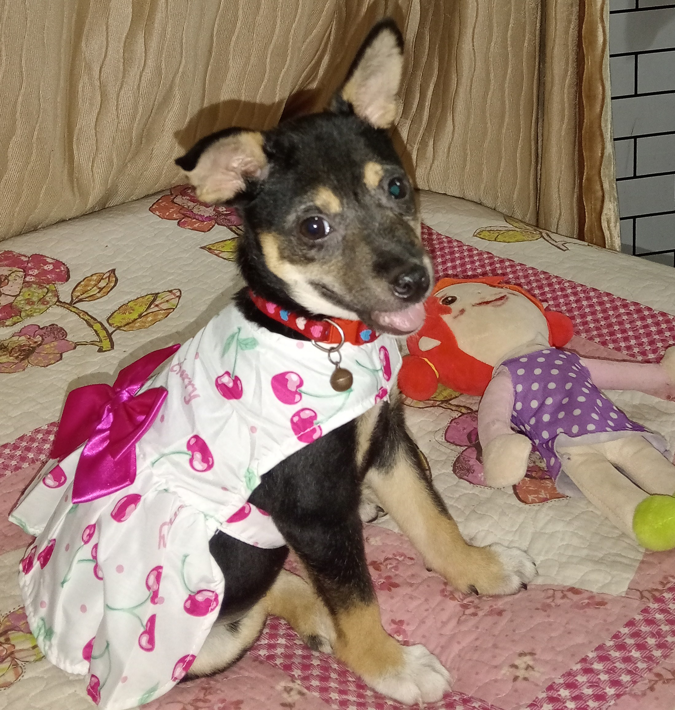

Profile Card

Jemarie N. Plenos
BS Information Technology
Biography
Jemarie N. Plenos is a third-year student at University of Mindanao Digos College, pursuing a BS in Information Technology. As an NCUIRE research scholarship recipient, she studies river pollution alongside faculty. Sally also works as an intern at the Phoenix Zoo, combining her passion for marine conservation and public outreach.